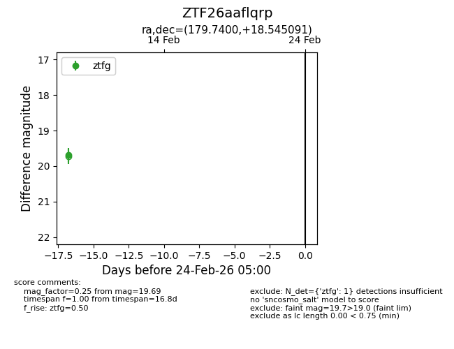
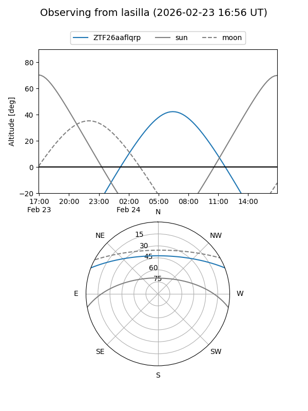
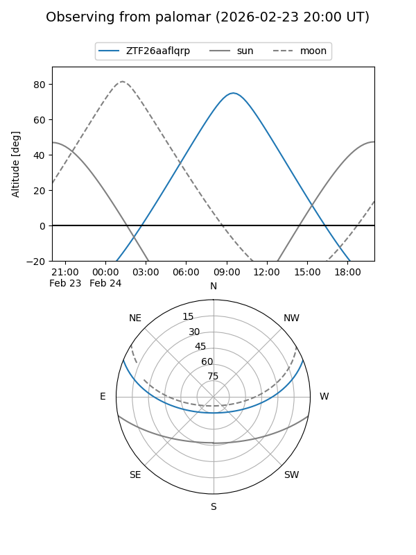

ZTF26aaflqrp
Target ZTF26aaflqrp at 2026-02-24 09:08
Aliases and brokers:
FINK: link
Lasair: link
ALeRCE: link
alt names
ZTF26aaflqrp (ztf,fink_ztf)
Coordinates:
equatorial (ra, dec) = 179.7400,+18.54509
equatorial (HMS+DMS) = 11:58:57.61,+18:32:42.33
galactic (l, b) = (245.5958,+75.18959)
Flags:
Photometry:
last ztfg=19.69
1 ztfg detections
Lightcurve

Visibility


Additional plots